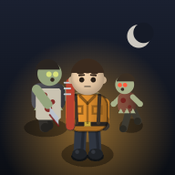

Danny Game Center
by Danny Soft
대니의 게임 모음이에요. 휴대폰에서 열고 브라우저 메뉴의 홈 화면에 추가를 누르면 앱처럼 설치돼요(인터넷 없이도 실행).

Zombie Outpost무너진 도시의 끝, 마지막 불빛을 지켜라. 세로 화면 쿼터뷰 좀비 서바이벌. 필드에서 싸우고 파밍해 기지를 키우고, 동료를 구해 전진기지를 늘려요. 쓰러지면 처음부터(로그라이크).
저장은 기기마다 그 브라우저(또는 설치한 앱)에 따로 남아요.